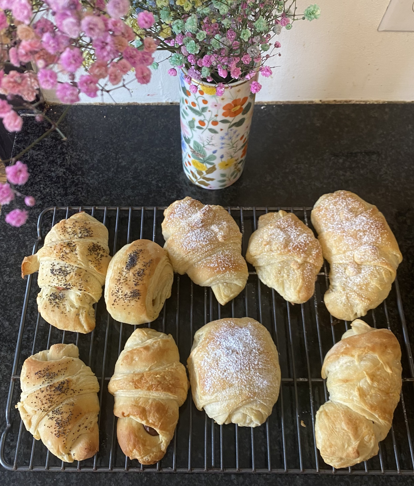

Croissants
Back to Main Page

Ingredients
For Dough
1 package tofu, pressed
2 tbsp soy sauce or tamari
2 garlic cloves, pressed/minced
1 tbsp sesame oil
For FIllings
2 cloves garlic
2 tbsp soy sauce or tamari
Instructions
Preheat the oven to 400 degrees F.